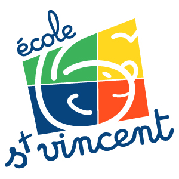
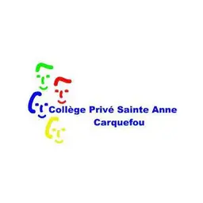

Ecole Saint Vincent
des plus petite classe au CM2

Collège Saint-Anne de carquefou
Brevet des Collèges - 2021
Lycée Saint félix la salle à Nantes
Bac STI2D SIN - 2024
IUT Informatique
BUT Informatique - en cours
À venir...
École d'ingénieur ou entré dans le monde professionnelles